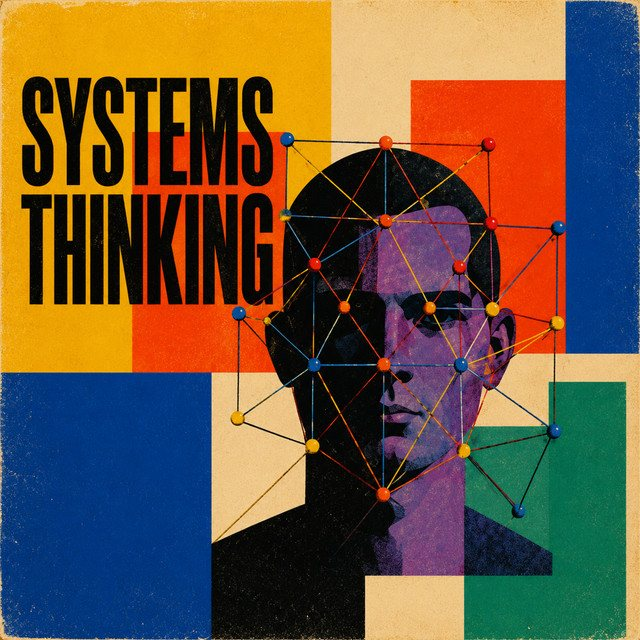

The Eclectic Polymath Podcast · Archive
#136 Systems Thinking: Why Problems Are Usually Bigger Than the Parts

About this episode
Most problems look simpler when you isolate the parts. Systems thinking starts from the opposite assumption: the relationships between the parts may matter more than the parts themselves.
This episode looks at the foundations of systems thinking and the people who helped shape it, including Ludwig von Bertalanffy, Jay Forrester, and Donella Meadows. It gets into feedback loops, stocks and flows, delays, unintended consequences, and why complex systems often resist the obvious fixes we try to impose on them.
We also get into leverage points, information flows, system goals, and how this framework can be used to understand organizations, cities, economies, ecosystems, and everyday decisions. This is a story about learning to see structure beneath events—and why changing the right relationship can matter more than changing a hundred individual pieces.
Key points
- Most problems look simpler when you isolate the parts.
- Systems thinking starts from the opposite assumption: the relationships between the parts may matter more than the parts themselves.
- This episode looks at the foundations of systems thinking and the people who helped shape it, including Ludwig von Bertalanffy, Jay Forrester, and Donella Meadows.
More like this
 #221 The Homestead: Who Got Set Up, Who Got StrippedOctober 18, 20261:14:22
#221 The Homestead: Who Got Set Up, Who Got StrippedOctober 18, 20261:14:22 #219 The Grove & The Americana: Fake Towns, Real EmpireOctober 17, 202649:36
#219 The Grove & The Americana: Fake Towns, Real EmpireOctober 17, 202649:36 #148 The German Migration to South Carolina: How 18th-Century Pioneers Shaped the American SouthAugust 25, 202638:22
#148 The German Migration to South Carolina: How 18th-Century Pioneers Shaped the American SouthAugust 25, 202638:22 #140 British India: Capital, Conquest, and the Making of The East India CompanyAugust 23, 202643:55
#140 British India: Capital, Conquest, and the Making of The East India CompanyAugust 23, 202643:55